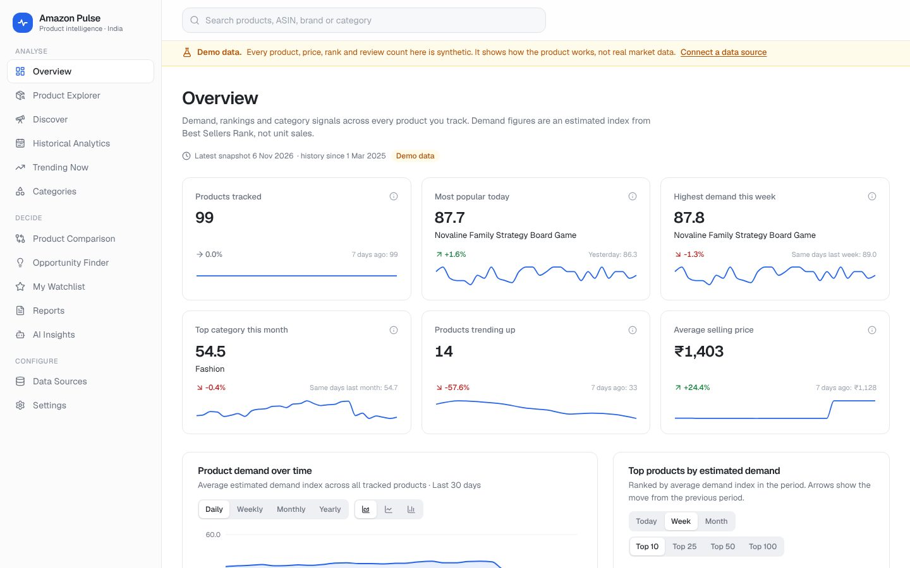
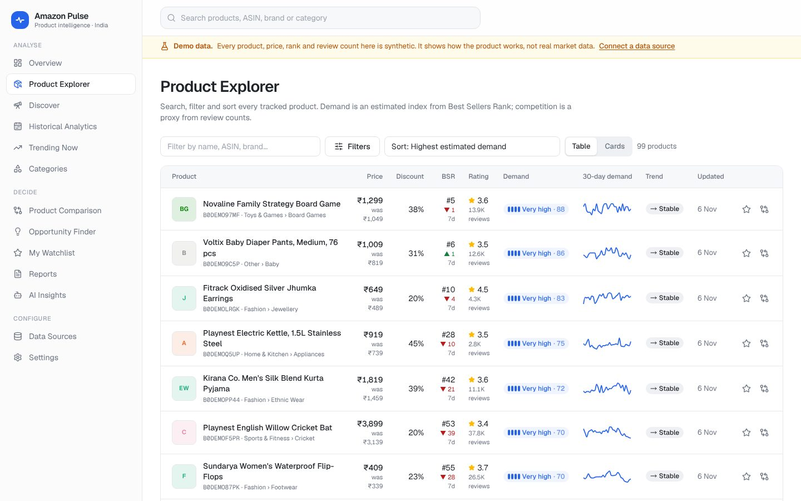
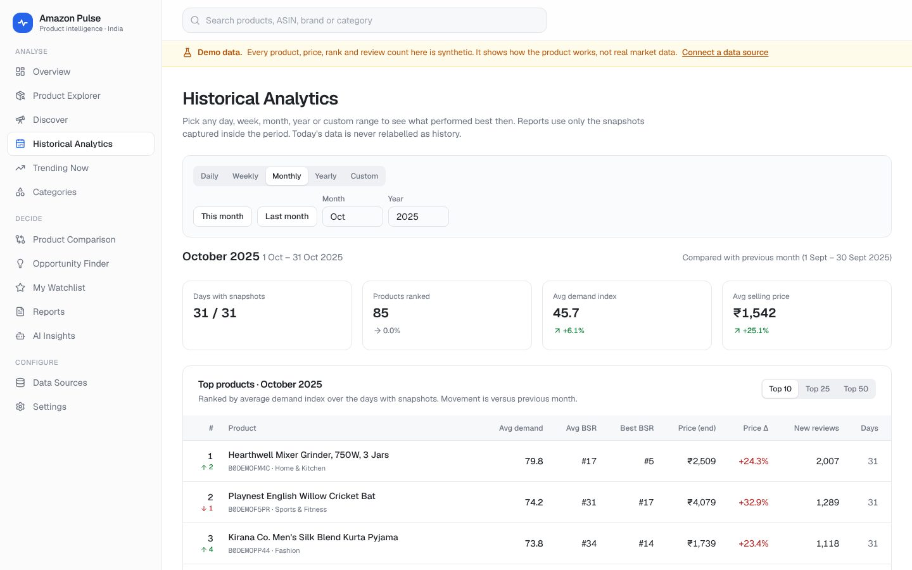
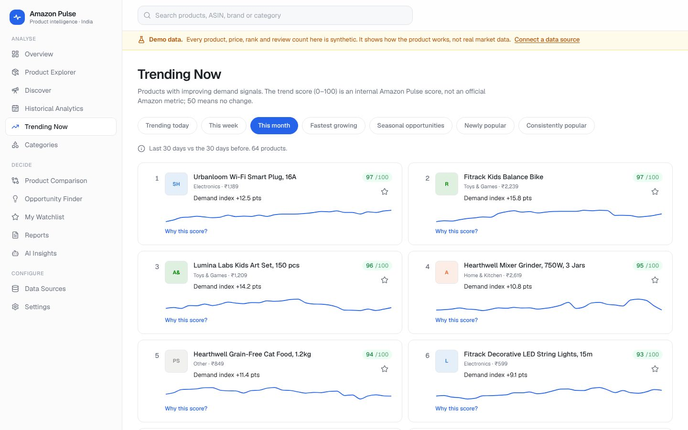
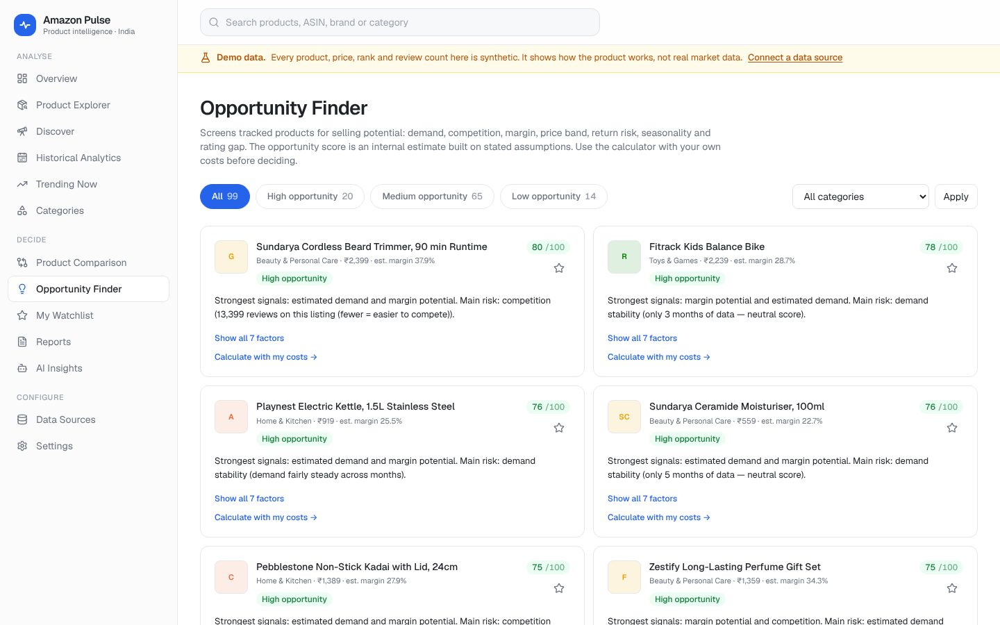
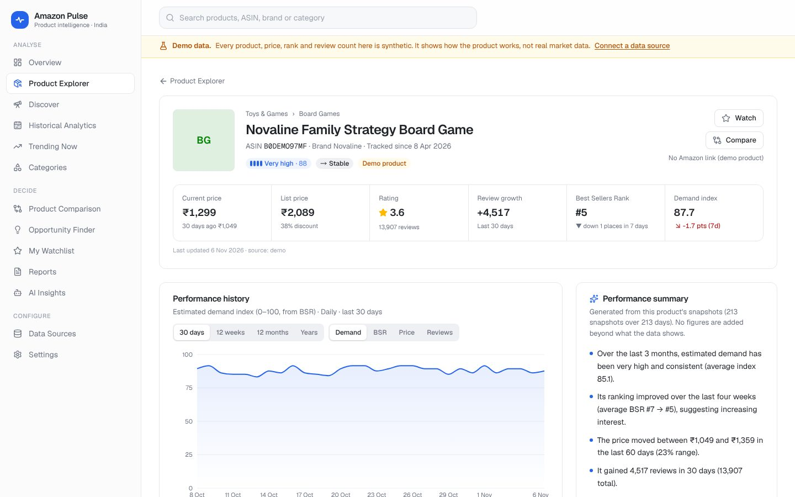
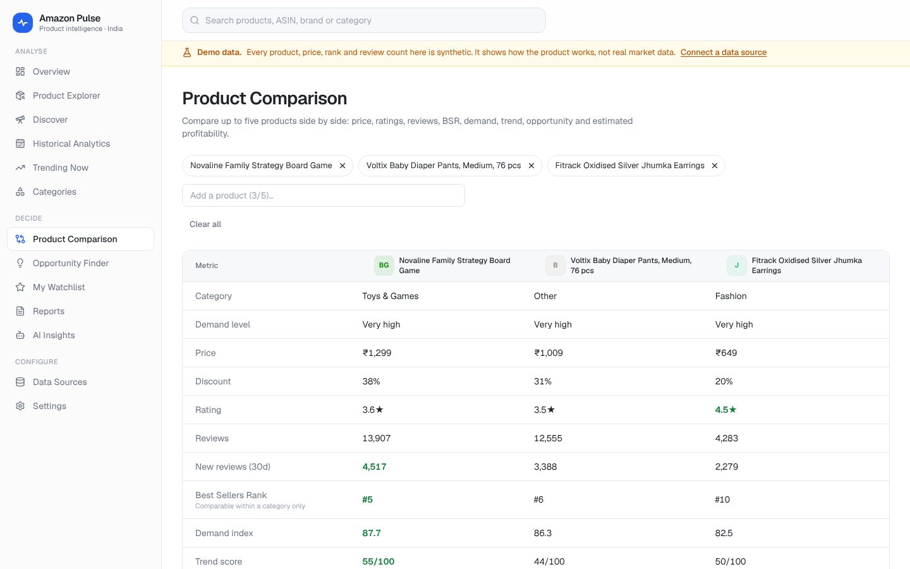
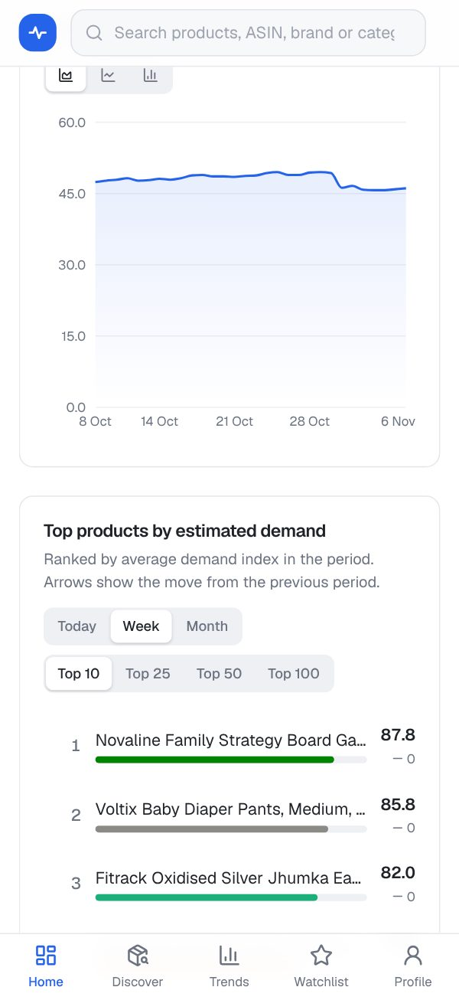
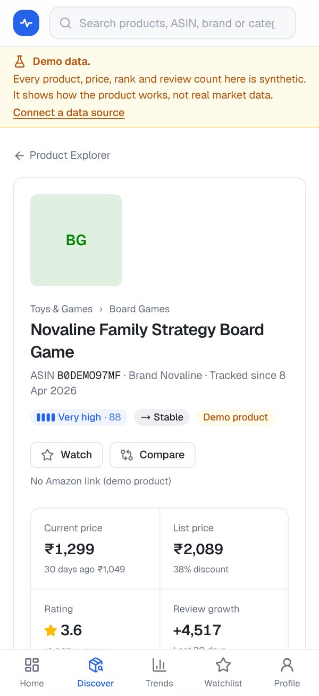

Web app · installable on phones
Amazon Pulse
Product intelligence for sellers on Amazon India: which products are in demand, which are rising, and which are worth selling. It keeps a daily snapshot of every product it tracks, so any day, week, month or year can be looked back on, and it never fills a missing period with guesses.
The live app is a private workspace: sign up to use it. The screens below show its demo mode, which runs on clearly labelled synthetic data.
- Daily data from Amazon's Selling Partner API, or CSV history.
- Rankings by estimated demand for any day, week, month, year or date range, with what entered and left the top.
- Trend and opportunity scores that show every signal behind them.
- Profit after Amazon fees and GST, with input tax credit handled correctly.
- Keyword search of the Amazon.in catalog to find high-demand products to track.
- An AI assistant that answers only from the data, with its period and limits.
- Watchlists, alerts, and reports in Excel, CSV and PDF.
On a computer







On a phone



